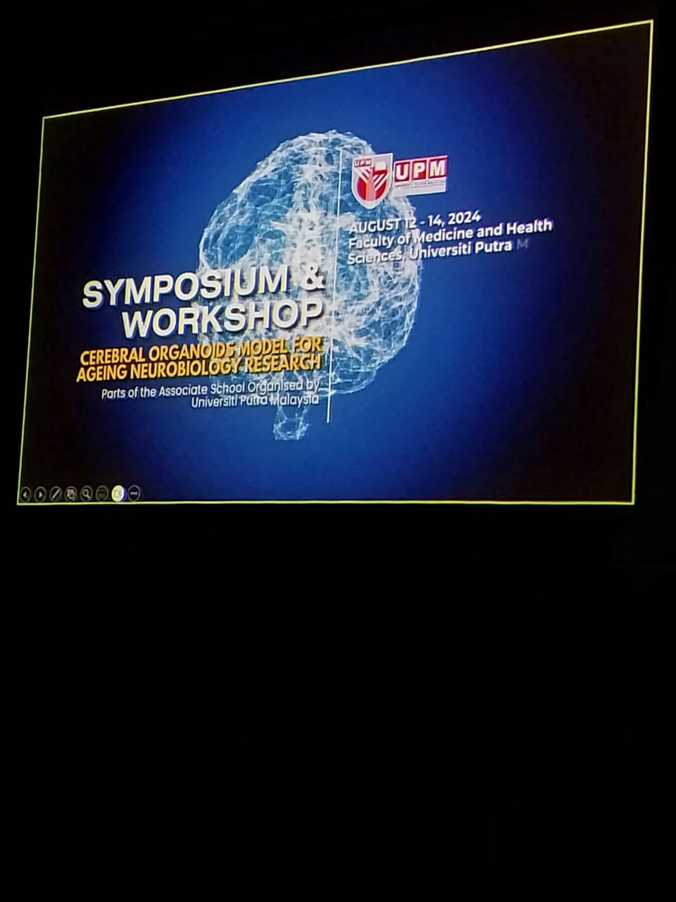

Cerebral Organoids Model for Ageing Neurobiology Research - A Conference by the International Brain Research Organisation
Right after my internship at UPM under Dr Rachel, I had the privilege
of being able to attend a Symposium where experts were invited to share
their findings and research. More specifically, it was about the use of
cerebral organoids as models for ageing neurobiology research. To me, this
was definitely a very new experience because I had never attended anything
even remotely similar, but it was an experience I truly enjoyed because I
got to learn what was happening at the forefront of scientific discvoery.
Cerebral organoids are three-dimensional cultures derived from pluripotent
stem cells (PSCs). Essentially, they're mini-brains that mimic the structural
and functional properties of the
human brain. These organoids are grown in vitro and recapitulate key aspects
of brain development, which has provided scientists with a unique model to study neural tissue in a
controlled environment. During the symposium, several experts highlighted
how cerebral organoids bridge the gap between traditional two-dimensional cell
cultures and animal models, which are then able to offer more physiologically relevant insights.
I was particularly interested in Dr Mather's keynote lecture on the hallmarks
of an ageing brain and Professor Dr Sun's lecture on the technical aspects
of using cerebral organoids (i.e. scalable production for things like drug
screening and nerve regeneration). There was so much new information, but I
learned so much just by listening to these incredible lecturers.
With this, I've realised how incredibly privileged I am to be attending such
a talk. As a high school student, these opportunities are definitely difficult
to come by. This is why I am looking forward to hopefully working with some of these
professors to establish a Youth Division of the Society for Neurosciences or a
Malaysian Chapter under the International Youth Neuroscience Association!
A massive thank you to Dr Michael and his team at UPM for putting this whole
symposium together and allowing me to have this wonderful experience!
